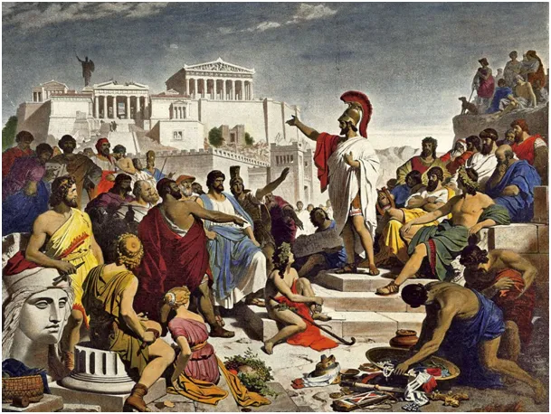
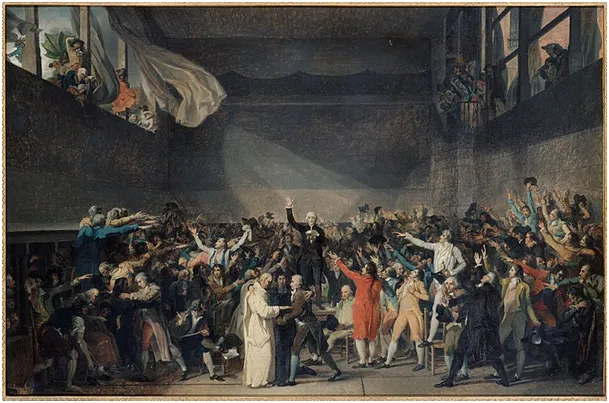

Polityka nas dotyka. Czy jesteśmy skazani na mniejsze zło?
Od razu odpowiem: Tak!
Cokolwiek myślimy o systemie społecznym, w jakim żyjemy, to w nim żyjemy. Państwo jest organizacją, która ma monopol na przymus i użycie siły wobec jednostki. Było tak, jest i będzie bez względu na system polityczny, jaki mamy. Czy to monarchia, czy demokracja podatki trzeba płacić i prawa przestrzegać. Żyjemy w czasach, gdy wydajność pracy dzięki technice jest duża, że mała część społeczeństwa pracującego produktywnie jest w stanie wyżywić całą populację. Ta mniejszość jest okładana wielkimi podatkami, które się redystrybuuje potem wśród pozostałych. Socjal jest w tym małym fragmentem.
Największy kawałek tortu zjadany jest przez etatyzm. Miliony ludzi na etatach „pracuje” i żyje. Jednak, co pokazał lockdown, gdy zamknięto wszystkie instytucje, nic się nie działo, GUS pracował zdalnie a ludzie umierali i rodzili się bez pomocy GUSu.

Czyja praca jest potrzebna a czyja tylko pozornie potrzebna decyduje prosty test: czy z własnej woli wyjąłbyś kilkaset złotych rocznie, aby złożyć się np. na etat ministra X, czy rzecznika Y? Czy wyjąłbyś z własnej kieszeni kolejne setki złotych na akcję społeczną promowania kultury polskiej w Lesoto? Takich przykładów możemy podać miliony, kosztują nas miliardy złotych, są tym wszelkie cuda typu „ekologiczna wiata przystankowa bez dachu”.
Skala mielonych środków jest ogromna. Dzieje się tak, ponieważ bardzo świadoma większość korzystająca z tego sytemu, głosuje na partie etatystyczne. Wybory w Polsce wygrywa „frekwencja”. Faktycznie te partie mają ok. 30% poparcia, czyli 3 osoby na 10. Na wybory idzie 60%, 40% mówi, że to nie ma sensu, itp. Skutek jest taki, że 3 osoby, to 50 % z grupy głosujących 6 osób. System wyborczy promuje zwycięskie partie i mają oni 60% posłów. Jaki jest skutek, każdy widzi.

Co ciekawe duża grupa ludzi głosuje przeciw swoim interesom i interesom swojej rodziny. Z powodu sentymentów, emocji, itp. wielu prywatnych przedsiębiorców, pracowników najemnych, ludzi z wolnych zawodów, rolników głosuje na partie, które podwyższają im podatki.
Kierowanie się emocjami, czy sentymentem w tej jednej chwili, gdy mamy jakiś wpływ jest irracjonalne. Nigdy nie będzie tak, że partia X, czy Y idealnie odpowiada naszym przekonaniom. Polityka to czysta kalkulacja, to trzeba sobie „policzyć” z kim nam najbardziej po drodze a z kim- nie.
Byłem wczoraj na Konwencji Wyborczej jednej z partii. Sympatyzuję z nimi od czasów „komuny”, w mojej rodzinie podstawą był rodzinny biznes i nikt nie czekał na „konfitury”. Jedyną troską była swoboda działania i niskie podatki. Warstwa światopoglądowa nie jest bez znaczenia i tu akurat pokrywa się z wątkiem ekonomicznym: swoboda działania i indywidualizm. Pojęcie kapitalizmu nie pochodzi od słowa kapitał, tylko od pojęcia „capita”, czyli głowa. Chodzi o fakt, że podmiotem prawnym i ekonomicznym jest wolny człowiek, w przeciwieństwie do czasów feudalnych, gdzie kapitalizm istniał w miastach. Mieszczaństwo działało na prawach miejskich, w wielu obszarach poza jurysdykcją króla czy księcia.
Każda partia, ma wiele twarzy i wiele z nich nam się nie podoba, ale przecież nie będziemy z partią mieszkać przez kolejne 4 lata pod jednym dachem. Chodzi o to, aby dać swój głos tej, która nam ulży w tym żywocie, a w skrajnym przypadku najmniej zaszkodzi. Gdy idziemy do chirurga z wrzodem nie wydziwiamy, że ma niebieskie oczy albo, że jest marksistą. Na szczęście w tym sezonie mamy w czym wybierać, w tym spośród nie-marksistów. Czy kot jest czarny czy biały, gdy łapie myszy to jest dobry kot.
Paweł Klimczewski